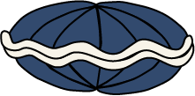
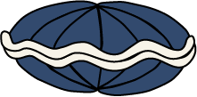

Het leven in de oceaan is nauwelijks in kaart gebracht. En de beste manier om dat te doen is niet door te kijken, maar door te luisteren, stelt bioloog Hans Slabbekoorn.
De oceaan lijkt misschien op een grote blauwe vlakte, een oase van rust. Maar eenmaal onder water is die rust ver te zoeken. Het bruist er niet alleen van scholen vissen, grote zoogdieren, algen, en krabben, ook de aanwezigheid van de mens is tot diep op de zeebodem te horen. Ga maar na. Duizenden vrachtschepen die elke dag de oceaan overvaren. Olieplatforms van vijftig bij vijftig meter, waar 24 uur per dag olie via grote pijpen wordt opgepompt. Grote windmolenparken die als tapijt over de oceaan worden uitgespreid.

En dat is zorgwekkend, stelt bioloog Hans Slabbekoorn . Voor het leven in de oceaan. Maar dat niet alleen. Het verstoren van die blauwe bak vol leven door de mens vormt ook een directe bedreiging voor de mens. Want de oceaan, dat is de controlekamer van de aarde. De temperatuur en de neerslag op land worden grotendeels bepaald in de ecosystemen van de oceanen. Die staan onder druk door overbevissing, chemische verontreiniging en de opwarming van de aarde. En er is nog een oorzaak waar je zelden iets over hoort: meer en meer menselijk geluid.

Lawaai dat wordt geproduceerd door scheepvaart is wereldwijd de grootste oorzaak van geluidsoverlast onderwater. Dit vormt een ernstige bedreiging voor walvissen, dolfijnen en bruinvissen omdat zij gebruik maken van sonar.
Op baleinwalvissen heeft menselijk lawaai een heftig effect, zegt Slabbekoorn. Ze maken lage geluiden en dat doen containerschepen ook. Decennia geleden konden deze dieren nog over duizenden kilometers communiceren, maar door schepen die gebruikmaken van sonar om te navigeren, horen de walvissen elkaar amper meer. Tegenwoordig kunnen ze nog ‘maar’ communiceren over een afstand van tien kilometer.


Geluid brengt dus nogal wat teweeg?
‘Jazeker. Soms zie je beelden van vissen die dood aan de oppervlakte van het water drijven als er geheid wordt voor het plaatsen van windmolens of olieplatforms. Dat die vissen doodgaan komt waarschijnlijk door de schokgolven en de intensiteit van het geluid. De trillingen zijn dan zo hevig dat het fragiele lichaam van een vis het begeeft. Of wat te denken van seismische onderzoeken om olie of gas op te sporen, of om de bodemgesteldheid te onderzoeken voor het plaatsen van windmolens. Dat zorgt voor harde geluiden die voor een dodelijke afloop kunnen zorgen bij dieren dichtbij. Menselijk geluid verstoort grote delen van de oceaan.’ ‘Er komen dode vissen bovendrijven als je gaat heien, doordat schokgolven de organen beschadigen en interne bloedingen veroorzaken’, legt Hans Slabbekoorn uit
Maar dat is allemaal best lokaal, toch?
‘Op het eerste gezicht lijkt dat zo. Het is ook niet zo heel erg dat er af en toe wat van die ecosystemen aangetast worden. Het probleem is alleen dat die geluiden tot ver in de oceaan te horen zijn. En dan heb ik het echt over duizenden kilometers. Die paar vissen tijdens het heien is niet het probleem. De impact die het duizenden kilometers verderop heeft, dat is het probleem. Dat tast bijna al het zeeleven aan.’
 

De larven van oesters, mosselen, kreeften, krabben en vissen worden
bijvoorbeeld geboren als een zwemmend oortje. Al heel vroeg in de
ontwikkeling kunnen deze dieren één ding heel goed: horen. Met dit
perfecte zintuig vinden ze beschutting, ontlopen ze gevaar en leren ze
te zoeken naar broedplaatsen die ze later kunnen bezoeken. Neem
zoöplankton, essentieel voor de CO2-opslag op aarde. Lang werd
gedacht dat deze diertjes simpelweg meedreven met de stroming.
Maar nee: ze gebruiken geluidsgolven om op het juiste moment omhoog
en omlaag te bewegen in de waterkolom. Is de timing verkeerd, omdat
er te veel lawaai van buitenaf is, dan kan dat zomaar de kansen op
overleving of voortplanting wegnemen.’
Populaties oesters en andere weekdieren delven onderspit omdat
ze door menselijke ruis geen plek meer kunnen vinden om te paren.